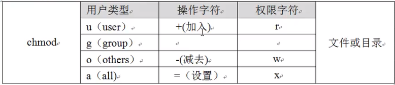

文件权限
- chmod
+ 数字表示法 +chmod 权限命令 文件
+chmod -R 权限命令 文件夹
加上 -R 表示递归的执行文件夹下面的所有文件。权限命令分为r:4,w:2:x:1"的组合。
比如:-rwxrwxrwx 1 szz szz 560 Nov 29 03:16 wiat_.c前面的权限-rwxrwxrwx就是表示777。 + 字符表示法
+chmod [用户类型] [+|-|=] [权限字符] 文件名
+chmod -R [用户类型] [+|-|=] [权限字符] 文件夹
比如： ```bash $ chmod u+rw wait.c # 给用户 读写权限 $ chmod u-rw wait.c # 去掉用户的读写权限 $ chmod g+rw wait.c # 给组 读写权限 $ chmod g=x wait.c # 设置组具有执行权限 $ chmod a=x wait.c # 都有执行权限 ```
- chown
+
chown [选项]... [所有者] [:组] 文件 ...+chown -R [所有者] [:组] 文件夹 ...比如: ```c $ ls -l wiat_.c ---x-wxrwx 1 szz szz 560 Nov 29 03:16 wiat_.c
//修改用户 $ sudo chown root wiat_.c ---xrw-rwx 1 root szz 560 Nov 29 03:16 wiat_.c
// 修改组 $ sudo chown .root wiat_.c ---xrw-rwx 1 root root 560 Nov 29 03:16 wiat_.c
//同时修改 $ sudo chown szz.szz wiat_.c ---xrw-rwx 1 szz szz 560 Nov 29 03:16 wiat_.c ```
- 增加/删除用户
在指定的组里添加成员。 + 增加组 :groupadd groupname+ 增加用户:useradd username -g groupname+ 删除用户:userdel username -g groupname+ 查看 :id username+ 改变用户：sudo su - username -
对于一个文件操作
假设当前环境是：
+ 用户有: lam, sz, other + 组别：family
状态如下：lam, sz 属于同一个组 family。bash $ id lam uid=1001(lam) gid=1002(family) groups=1002(family) $ id sz uid=1002(sz) gid=1002(family) groups=1002(family)有文件：wait.cppbash $ ls -l wait.cpp ---xrw-r-- 1 lam family 20 Nov 29 05:09 wait.cpp权限解释：
+ user : 对于用户 lam 具有可执行权限(x) + gropu: 对于属于组family的成员都具有具有rw权限 + other: 对于其他人other具有r权限 要是想让不同的成员获得想要的权限，就可以使用 chowm 命令来改变。
+ 删除 ：删除一个文件，是看该文件所属的目录权限 -
对于一个目录的操作
目录Process: dr-x--x--- 2 lam family 4096 Nov 29 05:14 Process用户other 目前对于 Process/ 目录没有任何的执行能力。 ``` $ cd Process/ -su: cd: Process/: Permission denied
$ ls Process/ ls: cannot open directory 'Process/': Permission denied
`` 把 *Process/* 的权限改为 *dr-x--x--x* 可以执行 *cd*, 再改为 *dr-x--xr-x* 可以执行 *ls Process/`*。+ 总结 + 可读r: 表示具有浏览目录下面文件及目录的权限。即可用 ls。 + 可写w: 表示具有增加、删除或者修改目录内文件名的权限 + 可执行x: 表示居于进入目录的权限，即 cd。
-
默认权限
文件权限计算方法与umask
+ 创建目录默认的最大权限是：777 + 创建文件最大权限是：666
+ 创建目录时：用 777- umask 即可得到所得目录权限
+ 创建文件时： 如果 umask得奇数位，用 666-umask 后，将 umask 的奇数位加1。
比如 umask =303， 那么文件权限是：666-303= 363,363+101=464，即 -r--rw-r--bash $ umask 303 $ touch msk_303 $ ls -l -r--rw-r-- 1 szz szz 0 Nov 29 06:39 msk_303 -
uid/gid
+ uid
+uid应用的对象是 命令，而不是文件。
+suid仅该指令执行过程中有效。 + 指令经过 suid 后，任意用户在执行该指令时，都可获得该指令对应的拥有者所具有的权限。修改密码的指令权限如下，在用户位权限上有个
s，就是代表 suid ：bash $ ls -l /usr/bin/passwd -rwsr-xr-x 1 root root 59640 Mar 22 2019 /usr/bin/passwd注意：用户权限前三位上的x位上如果有s就表示suid,当x位置上没有x时，suid就是S。现在有如下目录结构:
bash Permission/ └── test权限：bash drwxrwxr-x 2 root root 4096 Nov 29 19:06 Permission -rw-r--r-- 1 root root 0 Nov 29 19:06 test普通用户sz想要删除文件test权限不够。
bash $ rm test rm: remove write-protected regular empty file 'test'? Y rm: cannot remove 'test': Permission denied经过给指令rm设置uid之后，即设置命令rm具有所属的用户权限。比如：bash $ which rm /bin/rm $ ls -l /bin/rm -rw-r-xr-x 1 root root 63704 Jan 18 2018 /bin/rm $ sudo chmod u+s `which rm` $ ls -l /bin/rm -rwsr-xr-x 1 root root 63704 Jan 18 2018 /bin/rm $ rm test # 删除成功上面都设置uid功能就是使得rm命令具有其所属的root具有的权限。
注意：rm命令比较危险，需要将其命令改回去。bash $ sudo chmod 755 /bin/rm $ ls -l /bin/rm -rwxr-xr-x 1 root root 63704 Jan 18 2018 /bin/rm+ sgid sgid 与 suid 不同地方是 sgid 即可以对文件也可以针对目录设置。 + 针对文件 + sgid 针对二进制程序有效 + 二进制命令或者程序需要可执行权限x + 指令经过 sgid 后，任意用户在执行该指令时，都可获得该指令对应的所属组具有的权限。 + 对于目录 + 用户在此目录下创建的文件和目录，都有和此目录相同的用户组。
- suid/sgid的数字权限设置方法
suid/sgid位设置也是八进制。 + setuid 占用的是八进制:4000+ setgid 占用的是2000+ 粘滞位:占用的是1000
在之前的chmod命令前面加上 4/2/1 即可。